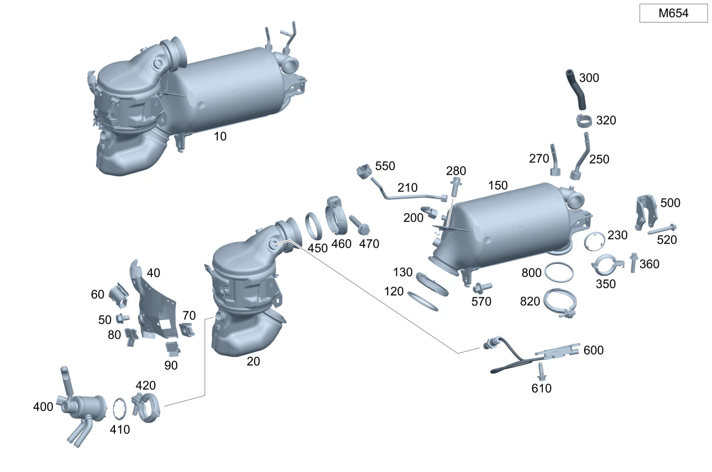

| № | Артикул | Название | Кол. | Примечание | Ограничение |
|---|---|---|---|---|---|
| 10 | A 654 140 68 00 | Трубка выпуска ОГ (EXHAUST GAS LINE) | 1 | Рулевое управление: Вправо [697] ДЕТАЛЬ ПОСТАВЛЯЕТСЯ ТОЛЬКО/ИЛИ ТАКЖЕ КАК ЗАП.ЧАСТЬ [414] СТАРУЮ ДЕТАЛЬ УСТАНАВЛИВАТЬ БОЛЬШЕ НЕ РАЗРЕШАЕТСЯ | M654 |
| 10 | A 654 140 44 03 | Трубка выпуска ОГ (EXHAUST GAS LINE) | 1 | Рулевое управление: Вправо [697] ДЕТАЛЬ ПОСТАВЛЯЕТСЯ ТОЛЬКО/ИЛИ ТАКЖЕ КАК ЗАП.ЧАСТЬ | M654 |
| 10 | A 654 140 44 00 | Трубка выпуска ОГ (EXHAUST GAS LINE) | 1 | Рулевое управление: Вправо [697] ДЕТАЛЬ ПОСТАВЛЯЕТСЯ ТОЛЬКО/ИЛИ ТАКЖЕ КАК ЗАП.ЧАСТЬ | M654+AA6 |
| 10 | A 654 140 44 03 | Трубка выпуска ОГ (EXHAUST GAS LINE) | 1 | Рулевое управление: Вправо [697] ДЕТАЛЬ ПОСТАВЛЯЕТСЯ ТОЛЬКО/ИЛИ ТАКЖЕ КАК ЗАП.ЧАСТЬ | M654+5S8 |
| 10 | A 654 140 38 04 | Трубка выпуска ОГ (EXHAUST GAS LINE) | 1 | Рулевое управление: Влево [697] ДЕТАЛЬ ПОСТАВЛЯЕТСЯ ТОЛЬКО/ИЛИ ТАКЖЕ КАК ЗАП.ЧАСТЬ | M654+5S8+U30 |
| 10 | A 654 140 72 02 | Трубка выпуска ОГ (EXHAUST GAS LINE) | 1 | Рулевое управление: Вправо [697] ДЕТАЛЬ ПОСТАВЛЯЕТСЯ ТОЛЬКО/ИЛИ ТАКЖЕ КАК ЗАП.ЧАСТЬ | M654+5S8+U30 |
| 10 | A 654 140 40 04 | Трубка выпуска ОГ (EXHAUST GAS LINE) | 1 | Рулевое управление: Вправо [697] ДЕТАЛЬ ПОСТАВЛЯЕТСЯ ТОЛЬКО/ИЛИ ТАКЖЕ КАК ЗАП.ЧАСТЬ | M654+5S8+U30 |
| 10 | A 654 140 72 02 | Трубка выпуска ОГ (EXHAUST GAS LINE) | 1 | Рулевое управление: Вправо [697] ДЕТАЛЬ ПОСТАВЛЯЕТСЯ ТОЛЬКО/ИЛИ ТАКЖЕ КАК ЗАП.ЧАСТЬ | M654+5S8+U30+(804+054/805/806) |
| 10 | A 654 140 72 02 | Трубка выпуска ОГ (EXHAUST GAS LINE) | 1 | Рулевое управление: Вправо [697] ДЕТАЛЬ ПОСТАВЛЯЕТСЯ ТОЛЬКО/ИЛИ ТАКЖЕ КАК ЗАП.ЧАСТЬ | M654+5S8+U30+065 |
| 10 | A 654 140 74 02 | Трубка выпуска ОГ (EXHAUST GAS LINE) | 1 | Рулевое управление: Вправо [697] ДЕТАЛЬ ПОСТАВЛЯЕТСЯ ТОЛЬКО/ИЛИ ТАКЖЕ КАК ЗАП.ЧАСТЬ | M654+AA6+U30 |
| 10 | A 654 140 41 04 | Трубка выпуска ОГ (EXHAUST GAS LINE) | 1 | Рулевое управление: Вправо [697] ДЕТАЛЬ ПОСТАВЛЯЕТСЯ ТОЛЬКО/ИЛИ ТАКЖЕ КАК ЗАП.ЧАСТЬ | M654+AA6+U30 |
| 10 | A 654 140 74 02 | Трубка выпуска ОГ (EXHAUST GAS LINE) | 1 | Рулевое управление: Вправо [697] ДЕТАЛЬ ПОСТАВЛЯЕТСЯ ТОЛЬКО/ИЛИ ТАКЖЕ КАК ЗАП.ЧАСТЬ | M654+AA6+U30+(804+054/805/806) |
| 10 | A 654 140 74 02 | Трубка выпуска ОГ (EXHAUST GAS LINE) | 1 | Рулевое управление: Вправо [697] ДЕТАЛЬ ПОСТАВЛЯЕТСЯ ТОЛЬКО/ИЛИ ТАКЖЕ КАК ЗАП.ЧАСТЬ | M654+AA6+U30+065 |
| 20 | A 654 140 51 04 | Трубка выпуска ОГ (EXHAUST GAS LINE) | 1 | Зона смешения AdBlue®(R) Рулевое управление: Влево [697] ДЕТАЛЬ ПОСТАВЛЯЕТСЯ ТОЛЬКО/ИЛИ ТАКЖЕ КАК ЗАП.ЧАСТЬ | M654 |
| 20 | A 654 140 53 04 | Трубка выпуска ОГ (EXHAUST GAS LINE) | 1 | Зона смешения AdBlue®(R) Рулевое управление: Влево [697] ДЕТАЛЬ ПОСТАВЛЯЕТСЯ ТОЛЬКО/ИЛИ ТАКЖЕ КАК ЗАП.ЧАСТЬ | M654+AA6 |
| 20 | A 654 140 54 01 | Трубка выпуска ОГ (EXHAUST GAS LINE) | 1 | Катализатор Рулевое управление: Влево [697] ДЕТАЛЬ ПОСТАВЛЯЕТСЯ ТОЛЬКО/ИЛИ ТАКЖЕ КАК ЗАП.ЧАСТЬ | M654 |
| 20 | Q 0000000001 | ВАЖНАЯ ИНФОРМАЦИЯ | 1 | Деталь не поставлена, заказать комплектацию следующего более высокого уровня Рулевое управление: Вправо | M654 |
| 20 | A 654 140 55 01 | Трубка выпуска ОГ (EXHAUST GAS LINE) | 1 | Катализатор Рулевое управление: Влево [697] ДЕТАЛЬ ПОСТАВЛЯЕТСЯ ТОЛЬКО/ИЛИ ТАКЖЕ КАК ЗАП.ЧАСТЬ | M654+AA6 |
| 20 | Q 0000000001 | ВАЖНАЯ ИНФОРМАЦИЯ | 1 | Деталь не поставлена, заказать комплектацию следующего более высокого уровня Рулевое управление: Вправо | M654+AA6 |
| 20 | Q 0000000001 | ВАЖНАЯ ИНФОРМАЦИЯ | 1 | Деталь не поставлена, заказать комплектацию следующего более высокого уровня Рулевое управление: Вправо | M654+5S8 |
| 20 | A 654 140 54 01 | Трубка выпуска ОГ (EXHAUST GAS LINE) | 1 | Катализатор Рулевое управление: Влево [697] ДЕТАЛЬ ПОСТАВЛЯЕТСЯ ТОЛЬКО/ИЛИ ТАКЖЕ КАК ЗАП.ЧАСТЬ | M654+5S8+U30 |
| 20 | Q 0000000001 | ВАЖНАЯ ИНФОРМАЦИЯ | 1 | Деталь не поставлена, заказать комплектацию следующего более высокого уровня Рулевое управление: Вправо | M654+5S8+U30 |
| 20 | A 654 140 55 01 | Трубка выпуска ОГ (EXHAUST GAS LINE) | 1 | Катализатор Рулевое управление: Влево [697] ДЕТАЛЬ ПОСТАВЛЯЕТСЯ ТОЛЬКО/ИЛИ ТАКЖЕ КАК ЗАП.ЧАСТЬ | M654+AA6+U30 |
| 20 | Q 0000000001 | ВАЖНАЯ ИНФОРМАЦИЯ | 1 | Деталь не поставлена, заказать комплектацию следующего более высокого уровня Рулевое управление: Вправо | M654+AA6+U30 |
| 40 | A 654 142 85 00 | Экран защитный (SCREENING PLATE) | 1 | К катализатору Рулевое управление: Влево | M654 |
| 40 | A 654 142 85 00 | - Экран защитный (SCREENING PLATE) | 1 | К катализатору Рулевое управление: Вправо | M654 |
| 40 | A 654 142 85 00 | Экран защитный (SCREENING PLATE) | 1 | К катализатору Рулевое управление: Влево | M654+AA6 |
| 40 | A 654 142 85 00 | - Экран защитный (SCREENING PLATE) | 1 | К катализатору Рулевое управление: Вправо | M654+AA6 |
| 40 | A 654 142 85 00 | Экран защитный (SCREENING PLATE) | 1 | К катализатору Рулевое управление: Влево | M654+5S8 |
| 40 | A 654 142 85 00 | - Экран защитный (SCREENING PLATE) | 1 | К катализатору Рулевое управление: Вправо | M654+5S8 |
| 40 | A 654 142 85 00 | Экран защитный (SCREENING PLATE) | 1 | К катализатору Рулевое управление: Влево | M654+5S8+U30 |
| 40 | A 654 142 85 00 | - Экран защитный (SCREENING PLATE) | 1 | К катализатору Рулевое управление: Вправо | M654+5S8+U30 |
| 40 | A 654 142 85 00 | Экран защитный (SCREENING PLATE) | 1 | К катализатору Рулевое управление: Влево | M654+AA6+U30 |
| 40 | A 654 142 85 00 | - Экран защитный (SCREENING PLATE) | 1 | К катализатору Рулевое управление: Вправо | M654+AA6+U30 |
| 50 | N 000000 004310 | - Винт с 6-гранной головкой (HEXAGON HEAD BOLT) | 1 | Экран к трубопроводу ОГ; M6X10 Рулевое управление: Влево | M654+5S8 |
| 50 | N 000000 004310 | - Винт с 6-гранной головкой (HEXAGON HEAD BOLT) | 1 | Экран к трубопроводу ОГ; M6X10 Рулевое управление: Вправо | M654+5S8 |
| 60 | A 012 988 14 78 | Крепежная скоба (FASTENING CLIP) | 2 | К экрану катализатора Рулевое управление: Влево | M654 |
| 60 | A 012 988 14 78 | - Крепежная скоба (FASTENING CLIP) | 2 | К экрану катализатора Рулевое управление: Вправо | M654 |
| 60 | A 012 988 14 78 | Крепежная скоба (FASTENING CLIP) | 2 | К экрану катализатора Рулевое управление: Влево | M654+AA6 |
| 60 | A 012 988 14 78 | - Крепежная скоба (FASTENING CLIP) | 2 | К экрану катализатора Рулевое управление: Вправо | M654+AA6 |
| 60 | A 012 988 14 78 | Крепежная скоба (FASTENING CLIP) | 2 | К экрану катализатора Рулевое управление: Влево | M654+5S8 |
| 60 | A 012 988 14 78 | - Крепежная скоба (FASTENING CLIP) | 2 | К экрану катализатора Рулевое управление: Вправо | M654+5S8 |
| 60 | A 012 988 14 78 | Крепежная скоба (FASTENING CLIP) | 2 | К экрану катализатора Рулевое управление: Влево | M654+5S8+U30 |
| 60 | A 012 988 14 78 | - Крепежная скоба (FASTENING CLIP) | 2 | К экрану катализатора Рулевое управление: Вправо | M654+5S8+U30 |
| 60 | A 012 988 14 78 | Крепежная скоба (FASTENING CLIP) | 2 | К экрану катализатора Рулевое управление: Влево | M654+AA6+U30 |
| 60 | A 012 988 14 78 | - Крепежная скоба (FASTENING CLIP) | 2 | К экрану катализатора Рулевое управление: Вправо | M654+AA6+U30 |
| 70 | A 004 994 14 45 | SPRING NUT (SPRING LOCK NUT) | 2 | К экрану катализатора; M6 Рулевое управление: Влево | M654 |
| 70 | A 004 994 14 45 | - SPRING NUT (SPRING LOCK NUT) | 2 | К экрану катализатора; M6 Рулевое управление: Вправо | M654 |
| 70 | A 004 994 14 45 | SPRING NUT (SPRING LOCK NUT) | 2 | К экрану катализатора; M6 Рулевое управление: Влево | M654+AA6 |
| 70 | A 004 994 14 45 | - SPRING NUT (SPRING LOCK NUT) | 2 | К экрану катализатора; M6 Рулевое управление: Вправо | M654+AA6 |
| 70 | A 004 994 14 45 | SPRING NUT (SPRING LOCK NUT) | 2 | К экрану катализатора; M6 Рулевое управление: Влево | M654+5S8 |
| 70 | A 004 994 14 45 | - SPRING NUT (SPRING LOCK NUT) | 2 | К экрану катализатора; M6 Рулевое управление: Вправо | M654+5S8 |
| 70 | A 004 994 14 45 | SPRING NUT (SPRING LOCK NUT) | 2 | К экрану катализатора; M6 Рулевое управление: Влево | M654+5S8+U30 |
| 70 | A 004 994 14 45 | - SPRING NUT (SPRING LOCK NUT) | 2 | К экрану катализатора; M6 Рулевое управление: Вправо | M654+5S8+U30 |
| 70 | A 004 994 14 45 | SPRING NUT (SPRING LOCK NUT) | 2 | К экрану катализатора; M6 Рулевое управление: Влево | M654+AA6+U30 |
| 70 | A 004 994 14 45 | - SPRING NUT (SPRING LOCK NUT) | 2 | К экрану катализатора; M6 Рулевое управление: Вправо | M654+AA6+U30 |
| 80 | A 000 541 03 00 | Держатель (HOLDER) | 4 | К экрану катализатора Рулевое управление: Влево | M654 |
| 80 | A 000 541 03 00 | - Держатель (HOLDER) | 4 | К экрану катализатора Рулевое управление: Вправо | M654 |
| 80 | A 000 541 03 00 | Держатель (HOLDER) | 4 | К экрану катализатора Рулевое управление: Влево | M654+AA6 |
| 80 | A 000 541 03 00 | - Держатель (HOLDER) | 4 | К экрану катализатора Рулевое управление: Вправо | M654+AA6 |
| 80 | A 000 541 03 00 | Держатель (HOLDER) | 4 | К экрану катализатора Рулевое управление: Влево | M654+5S8 |
| 80 | A 000 541 03 00 | - Держатель (HOLDER) | 4 | К экрану катализатора Рулевое управление: Вправо | M654+5S8 |
| 80 | A 000 541 03 00 | Держатель (HOLDER) | 4 | К экрану катализатора Рулевое управление: Влево | M654+5S8+U30 |
| 80 | A 000 541 03 00 | - Держатель (HOLDER) | 4 | К экрану катализатора Рулевое управление: Вправо | M654+5S8+U30 |
| 80 | A 000 541 03 00 | Держатель (HOLDER) | 4 | К экрану катализатора Рулевое управление: Влево | M654+AA6+U30 |
| 80 | A 000 541 03 00 | - Держатель (HOLDER) | 4 | К экрану катализатора Рулевое управление: Вправо | M654+AA6+U30 |
| 90 | A 000 541 01 40 | Держатель (HOLDER) | 1 | К экрану катализатора; 18 X 24 MM Рулевое управление: Влево | M654 |
| 90 | A 000 541 01 40 | - Держатель (HOLDER) | 1 | К экрану катализатора; 18 X 24 MM Рулевое управление: Вправо | M654 |
| 90 | A 000 541 01 40 | Держатель (HOLDER) | 1 | К экрану катализатора; 18 X 24 MM Рулевое управление: Влево | M654+AA6 |
| 90 | A 000 541 01 40 | - Держатель (HOLDER) | 1 | К экрану катализатора; 18 X 24 MM Рулевое управление: Вправо | M654+AA6 |
| 90 | A 000 541 01 40 | Держатель (HOLDER) | 1 | К экрану катализатора; 18 X 24 MM Рулевое управление: Влево | M654+5S8 |
| 90 | A 000 541 01 40 | - Держатель (HOLDER) | 1 | К экрану катализатора; 18 X 24 MM Рулевое управление: Вправо | M654+5S8 |
| 90 | A 000 541 01 40 | Держатель (HOLDER) | 1 | К экрану катализатора; 18 X 24 MM Рулевое управление: Влево | M654+5S8+U30 |
| 90 | A 000 541 01 40 | - Держатель (HOLDER) | 1 | К экрану катализатора; 18 X 24 MM Рулевое управление: Вправо | M654+5S8+U30 |
| 90 | A 000 541 01 40 | Держатель (HOLDER) | 1 | К экрану катализатора; 18 X 24 MM Рулевое управление: Влево | M654+AA6+U30 |
| 90 | A 000 541 01 40 | - Держатель (HOLDER) | 1 | К экрану катализатора; 18 X 24 MM Рулевое управление: Вправо | M654+AA6+U30 |
| 120 | A 274 142 00 80 | Полуметал. уплотнение (METAL-SOFT-MATERIAL SEAL) | 1 | Катализатор к сажевому фильтру Рулевое управление: Влево | M654 |
| 120 | Q 0000000001 | ВАЖНАЯ ИНФОРМАЦИЯ | 1 | Деталь не поставлена, заказать комплектацию следующего более высокого уровня Рулевое управление: Вправо | M654 |
| 120 | A 274 142 00 80 | Полуметал. уплотнение (METAL-SOFT-MATERIAL SEAL) | 1 | Катализатор к сажевому фильтру Рулевое управление: Влево | M654+AA6 |
| 120 | Q 0000000001 | ВАЖНАЯ ИНФОРМАЦИЯ | 1 | Деталь не поставлена, заказать комплектацию следующего более высокого уровня Рулевое управление: Вправо | M654+AA6 |
| 120 | A 274 142 00 80 | Полуметал. уплотнение (METAL-SOFT-MATERIAL SEAL) | 1 | Катализатор к сажевому фильтру Рулевое управление: Влево | M654+5S8 |
| 120 | Q 0000000001 | ВАЖНАЯ ИНФОРМАЦИЯ | 1 | Деталь не поставлена, заказать комплектацию следующего более высокого уровня Рулевое управление: Вправо | M654+5S8 |
| 120 | A 274 142 00 80 | Полуметал. уплотнение (METAL-SOFT-MATERIAL SEAL) | 1 | Катализатор к сажевому фильтру Рулевое управление: Влево | M654+5S8+U30 |
| 120 | Q 0000000001 | ВАЖНАЯ ИНФОРМАЦИЯ | 1 | Деталь не поставлена, заказать комплектацию следующего более высокого уровня Рулевое управление: Вправо | M654+5S8+U30 |
| 120 | A 274 142 00 80 | Полуметал. уплотнение (METAL-SOFT-MATERIAL SEAL) | 1 | Катализатор к сажевому фильтру Рулевое управление: Влево | M654+AA6+U30 |
| 120 | Q 0000000001 | ВАЖНАЯ ИНФОРМАЦИЯ | 1 | Деталь не поставлена, заказать комплектацию следующего более высокого уровня Рулевое управление: Вправо | M654+AA6+U30 |
| 130 | A 000 995 36 33 | Проф. хомут сист. вып. ОГ (PROFILE CLAMP, EXH. SYS.) | 1 | Катализатор к сажевому фильтру Рулевое управление: Влево | M654 |
| 130 | Q 0000000001 | ВАЖНАЯ ИНФОРМАЦИЯ | 1 | Деталь не поставлена, заказать комплектацию следующего более высокого уровня Рулевое управление: Вправо | M654 |
| 130 | A 000 995 36 33 | Проф. хомут сист. вып. ОГ (PROFILE CLAMP, EXH. SYS.) | 1 | Катализатор к сажевому фильтру Рулевое управление: Влево | M654+AA6 |
| 130 | Q 0000000001 | ВАЖНАЯ ИНФОРМАЦИЯ | 1 | Деталь не поставлена, заказать комплектацию следующего более высокого уровня Рулевое управление: Вправо | M654+AA6 |
| 130 | A 000 995 36 33 | Проф. хомут сист. вып. ОГ (PROFILE CLAMP, EXH. SYS.) | 1 | Катализатор к сажевому фильтру Рулевое управление: Влево | M654+5S8 |
| 130 | Q 0000000001 | ВАЖНАЯ ИНФОРМАЦИЯ | 1 | Деталь не поставлена, заказать комплектацию следующего более высокого уровня Рулевое управление: Вправо | M654+5S8 |
| 130 | A 000 995 36 33 | Проф. хомут сист. вып. ОГ (PROFILE CLAMP, EXH. SYS.) | 1 | Катализатор к сажевому фильтру Рулевое управление: Влево | M654+5S8+U30 |
| 130 | Q 0000000001 | ВАЖНАЯ ИНФОРМАЦИЯ | 1 | Деталь не поставлена, заказать комплектацию следующего более высокого уровня Рулевое управление: Вправо | M654+5S8+U30 |
| 130 | A 000 995 36 33 | Проф. хомут сист. вып. ОГ (PROFILE CLAMP, EXH. SYS.) | 1 | Катализатор к сажевому фильтру Рулевое управление: Влево | M654+AA6+U30 |
| 130 | Q 0000000001 | ВАЖНАЯ ИНФОРМАЦИЯ | 1 | Деталь не поставлена, заказать комплектацию следующего более высокого уровня Рулевое управление: Вправо | M654+AA6+U30 |
| 150 | A 654 140 55 04 | Дизельный сажевый фильтр (DIESEL PARTICULATE FILTER) | 1 | Сажевый фильтр Рулевое управление: Влево | M654+5S8+U30 |
| 150 | A 654 140 57 04 | Дизельный сажевый фильтр (DIESEL PARTICULATE FILTER) | 1 | Сажевый фильтр Рулевое управление: Влево | M654+AA6+U30 |
| 150 | A 654 140 26 04 | Дизельный сажевый фильтр (DIESEL PARTICULATE FILTER) | 1 | Сажевый фильтр Рулевое управление: Влево | M654+1U2 |
| 150 | A 654 140 20 03 | Дизельный сажевый фильтр (DIESEL PARTICULATE FILTER) | 1 | Сажевый фильтр Рулевое управление: Влево [697] ДЕТАЛЬ ПОСТАВЛЯЕТСЯ ТОЛЬКО/ИЛИ ТАКЖЕ КАК ЗАП.ЧАСТЬ | M654 |
| 150 | Q 0000000001 | ВАЖНАЯ ИНФОРМАЦИЯ | 1 | Деталь не поставлена, заказать комплектацию следующего более высокого уровня Рулевое управление: Вправо | M654 |
| 150 | A 654 140 63 01 | Дизельный сажевый фильтр (DIESEL PARTICULATE FILTER) | 1 | Сажевый фильтр Рулевое управление: Влево | M654+AA6 |
| 150 | Q 0000000001 | ВАЖНАЯ ИНФОРМАЦИЯ | 1 | Деталь не поставлена, заказать комплектацию следующего более высокого уровня Рулевое управление: Вправо | M654+AA6 |
| 150 | A 654 140 20 03 | Дизельный сажевый фильтр (DIESEL PARTICULATE FILTER) | 1 | Сажевый фильтр Рулевое управление: Влево [697] ДЕТАЛЬ ПОСТАВЛЯЕТСЯ ТОЛЬКО/ИЛИ ТАКЖЕ КАК ЗАП.ЧАСТЬ | M654+5S8 |
| 150 | Q 0000000001 | ВАЖНАЯ ИНФОРМАЦИЯ | 1 | Деталь не поставлена, заказать комплектацию следующего более высокого уровня Рулевое управление: Вправо | M654+5S8 |
| 150 | A 654 140 33 03 | Дизельный сажевый фильтр (DIESEL PARTICULATE FILTER) | 1 | Сажевый фильтр Рулевое управление: Влево [697] ДЕТАЛЬ ПОСТАВЛЯЕТСЯ ТОЛЬКО/ИЛИ ТАКЖЕ КАК ЗАП.ЧАСТЬ | M654+5S8+U30 |
| 150 | Q 0000000001 | ВАЖНАЯ ИНФОРМАЦИЯ | 1 | Деталь не поставлена, заказать комплектацию следующего более высокого уровня Рулевое управление: Вправо | M654+5S8+U30 |
| 150 | A 654 140 35 03 | Дизельный сажевый фильтр (DIESEL PARTICULATE FILTER) | 1 | Сажевый фильтр Рулевое управление: Влево [697] ДЕТАЛЬ ПОСТАВЛЯЕТСЯ ТОЛЬКО/ИЛИ ТАКЖЕ КАК ЗАП.ЧАСТЬ | M654+AA6+U30 |
| 150 | Q 0000000001 | ВАЖНАЯ ИНФОРМАЦИЯ | 1 | Деталь не поставлена, заказать комплектацию следующего более высокого уровня Рулевое управление: Вправо | M654+AA6+U30 |
| 200 | A 654 140 91 01 | Напорный трубопровод (PRESSURE LINE) | 1 | Спереди Рулевое управление: Влево | M654 |
| 200 | A 654 140 91 01 | - Напорный трубопровод (PRESSURE LINE) | 1 | Спереди Рулевое управление: Вправо | M654 |
| 200 | A 654 140 91 01 | Напорный трубопровод (PRESSURE LINE) | 1 | Спереди Рулевое управление: Влево | M654+AA6 |
| 200 | A 654 140 91 01 | - Напорный трубопровод (PRESSURE LINE) | 1 | Спереди Рулевое управление: Вправо | M654+AA6 |
| 200 | A 654 140 91 01 | Напорный трубопровод (PRESSURE LINE) | 1 | Спереди Рулевое управление: Влево | M654+5S8 |
| 200 | A 654 140 91 01 | - Напорный трубопровод (PRESSURE LINE) | 1 | Спереди Рулевое управление: Вправо | M654+5S8 |
| 200 | A 654 140 91 01 | Напорный трубопровод (PRESSURE LINE) | 1 | Спереди Рулевое управление: Влево | M654+5S8+U30 |
| 200 | A 654 140 92 01 | - Напорный трубопровод (PRESSURE LINE) | 1 | Спереди Рулевое управление: Вправо | M654+5S8+U30 |
| 200 | A 654 140 91 01 | Напорный трубопровод (PRESSURE LINE) | 1 | Спереди Рулевое управление: Влево | M654+AA6+U30 |
| 200 | A 654 140 91 01 | - Напорный трубопровод (PRESSURE LINE) | 1 | Спереди Рулевое управление: Вправо | M654+AA6+U30 |
| 210 | A 654 140 92 01 | Напорный трубопровод (PRESSURE LINE) | 1 | Сзади Рулевое управление: Влево | M654 |
| 210 | A 654 140 92 01 | - Напорный трубопровод (PRESSURE LINE) | 1 | Сзади Рулевое управление: Вправо | M654 |
| 210 | A 654 140 92 01 | Напорный трубопровод (PRESSURE LINE) | 1 | Сзади Рулевое управление: Влево | M654+AA6 |
| 210 | A 654 140 92 01 | - Напорный трубопровод (PRESSURE LINE) | 1 | Сзади Рулевое управление: Вправо | M654+AA6 |
| 210 | A 654 140 92 01 | Напорный трубопровод (PRESSURE LINE) | 1 | Сзади Рулевое управление: Влево | M654+5S8 |
| 210 | A 654 140 92 01 | - Напорный трубопровод (PRESSURE LINE) | 1 | Сзади Рулевое управление: Вправо | M654+5S8 |
| 210 | A 654 140 92 01 | Напорный трубопровод (PRESSURE LINE) | 1 | Сзади Рулевое управление: Влево | M654+5S8+U30 |
| 210 | A 654 140 92 01 | - Напорный трубопровод (PRESSURE LINE) | 1 | Сзади Рулевое управление: Вправо | M654+5S8+U30 |
| 210 | A 654 140 92 01 | Напорный трубопровод (PRESSURE LINE) | 1 | Сзади Рулевое управление: Влево | M654+AA6+U30 |
| 210 | A 654 140 92 01 | - Напорный трубопровод (PRESSURE LINE) | 1 | Сзади Рулевое управление: Вправо | M654+AA6+U30 |
| 230 | A 654 142 19 80 | Прокладка, однослойная (METAL SEAL, SINGLE LAYER) | 1 | Сажевый фильтр к системе рециркуляции ОГ Рулевое управление: Влево | M654 |
| 230 | A 654 142 19 80 | - Прокладка, однослойная (METAL SEAL, SINGLE LAYER) | 1 | Сажевый фильтр к системе рециркуляции ОГ Рулевое управление: Вправо | M654 |
| 230 | A 654 142 19 80 | Прокладка, однослойная (METAL SEAL, SINGLE LAYER) | 1 | Сажевый фильтр к системе рециркуляции ОГ Рулевое управление: Влево | M654+AA6 |
| 230 | A 654 142 19 80 | - Прокладка, однослойная (METAL SEAL, SINGLE LAYER) | 1 | Сажевый фильтр к системе рециркуляции ОГ Рулевое управление: Вправо | M654+AA6 |
| 230 | A 654 142 19 80 | Прокладка, однослойная (METAL SEAL, SINGLE LAYER) | 1 | Сажевый фильтр к системе рециркуляции ОГ Рулевое управление: Влево | M654+5S8 |
| 230 | A 654 142 19 80 | - Прокладка, однослойная (METAL SEAL, SINGLE LAYER) | 1 | Сажевый фильтр к системе рециркуляции ОГ Рулевое управление: Вправо | M654+5S8 |
| 230 | A 654 142 19 80 | Прокладка, однослойная (METAL SEAL, SINGLE LAYER) | 1 | Сажевый фильтр к системе рециркуляции ОГ Рулевое управление: Влево | M654+5S8+U30 |
| 230 | A 654 142 19 80 | - Прокладка, однослойная (METAL SEAL, SINGLE LAYER) | 1 | Сажевый фильтр к системе рециркуляции ОГ Рулевое управление: Вправо | M654+5S8+U30 |
| 230 | A 654 142 19 80 | Прокладка, однослойная (METAL SEAL, SINGLE LAYER) | 1 | Сажевый фильтр к системе рециркуляции ОГ Рулевое управление: Влево | M654+AA6+U30 |
| 230 | A 654 142 19 80 | - Прокладка, однослойная (METAL SEAL, SINGLE LAYER) | 1 | Сажевый фильтр к системе рециркуляции ОГ Рулевое управление: Вправо | M654+AA6+U30 |
| 250 | A 654 140 31 03 | - Напорный трубопровод (PRESSURE LINE) | 1 | Сзади сверху Рулевое управление: Влево | M654 |
| 250 | A 654 140 64 04 | - Напорный трубопровод (PRESSURE LINE) | 1 | Сзади сверху Рулевое управление: Влево | M654 |
| 250 | A 654 140 31 03 | - Напорный трубопровод (PRESSURE LINE) | 1 | Сзади сверху Рулевое управление: Вправо | M654 |
| 250 | A 654 140 64 04 | - Напорный трубопровод (PRESSURE LINE) | 1 | Сзади сверху Рулевое управление: Вправо | M654 |
| 250 | A 654 140 93 01 | - Напорный трубопровод (PRESSURE LINE) | 1 | Сзади сверху Рулевое управление: Влево | M654+AA6 |
| 250 | A 654 140 93 01 | - Напорный трубопровод (PRESSURE LINE) | 1 | Сзади сверху Рулевое управление: Вправо | M654+AA6 |
| 250 | A 654 140 64 04 | - Напорный трубопровод (PRESSURE LINE) | 1 | Сзади сверху Рулевое управление: Влево | M654+5S8 |
| 250 | A 654 140 64 04 | - Напорный трубопровод (PRESSURE LINE) | 1 | Сзади сверху Рулевое управление: Вправо | M654+5S8 |
| 250 | A 654 140 31 03 | - Напорный трубопровод (PRESSURE LINE) | 1 | Сзади сверху Рулевое управление: Влево | M654+5S8+U30 |
| 250 | A 654 140 64 04 | - Напорный трубопровод (PRESSURE LINE) | 1 | Сзади сверху Рулевое управление: Влево | M654+5S8+U30 |
| 250 | A 654 140 31 03 | - Напорный трубопровод (PRESSURE LINE) | 1 | Сзади сверху Рулевое управление: Вправо | M654+5S8+U30 |
| 250 | A 654 140 64 04 | - Напорный трубопровод (PRESSURE LINE) | 1 | Сзади сверху Рулевое управление: Вправо | M654+5S8+U30 |
| 250 | A 654 140 93 01 | - Напорный трубопровод (PRESSURE LINE) | 1 | Сзади сверху Рулевое управление: Влево | M654+AA6+U30 |
| 250 | A 654 140 93 01 | - Напорный трубопровод (PRESSURE LINE) | 1 | Сзади сверху Рулевое управление: Влево | M654+AA6+U30 |
| 250 | A 654 140 93 01 | - Напорный трубопровод (PRESSURE LINE) | 1 | Сзади сверху Рулевое управление: Вправо | M654+AA6+U30 |
| 250 | A 654 140 93 01 | - Напорный трубопровод (PRESSURE LINE) | 1 | Сзади сверху Рулевое управление: Вправо | M654+AA6+U30 |
| 270 | A 654 140 32 03 | Напорный трубопровод (PRESSURE LINE) | 1 | Сзади вверху справа Рулевое управление: Влево | M654 |
| 270 | A 654 140 32 03 | - Напорный трубопровод (PRESSURE LINE) | 1 | Сзади вверху справа Рулевое управление: Вправо | M654 |
| 270 | Q 0000000001 | - ВАЖНАЯ ИНФОРМАЦИЯ | 1 | Деталь не поставлена, заказать комплектацию следующего более высокого уровня Рулевое управление: Влево | M654+AA6 |
| 270 | Q 0000000001 | - ВАЖНАЯ ИНФОРМАЦИЯ | 1 | Деталь не поставлена, заказать комплектацию следующего более высокого уровня Рулевое управление: Вправо | M654+AA6 |
| 270 | A 654 140 32 03 | Напорный трубопровод (PRESSURE LINE) | 1 | Сзади вверху справа Рулевое управление: Влево | M654+5S8 |
| 270 | A 654 140 32 03 | - Напорный трубопровод (PRESSURE LINE) | 1 | Сзади вверху справа Рулевое управление: Вправо | M654+5S8 |
| 270 | A 654 140 32 03 | Напорный трубопровод (PRESSURE LINE) | 1 | Сзади вверху справа Рулевое управление: Влево | M654+5S8+U30 |
| 270 | A 654 140 32 03 | - Напорный трубопровод (PRESSURE LINE) | 1 | Сзади вверху справа Рулевое управление: Вправо | M654+5S8+U30 |
| 270 | Q 0000000001 | - ВАЖНАЯ ИНФОРМАЦИЯ | 1 | Деталь не поставлена, заказать комплектацию следующего более высокого уровня Рулевое управление: Влево | M654+AA6+U30 |
| 270 | Q 0000000001 | - ВАЖНАЯ ИНФОРМАЦИЯ | 1 | Деталь не поставлена, заказать комплектацию следующего более высокого уровня Рулевое управление: Вправо | M654+AA6+U30 |
| 280 | N 000000 000276 | - Винт с 6-гр. глвк (HEXALOBULAR SCREW) | 2 | Трубопровод ОГ к сажевому фильтру; M8X20 Рулевое управление: Влево | M654+5S8 |
| 280 | N 000000 000276 | - Винт с 6-гр. глвк (HEXALOBULAR SCREW) | 2 | Трубопровод ОГ к сажевому фильтру; M8X20 Рулевое управление: Вправо | M654+5S8 |
| 300 | A 654 141 01 04 | Трубка выпуска ОГ (EXHAUST GAS LINE) | 1 | Система рециркуляции ОГ | M654 |
| 300 | A 654 141 06 00 | Трубка выпуска ОГ (EXHAUST GAS LINE) | 1 | Система рециркуляции ОГ | M654+AA6 |
| 320 | A 003 997 87 90 | Хомут для шланга (HOSE CLAMP) | 2 | Крепление трубопровода ОГ; 13.5 MM | M654+-(AA5/AA6) |
| 320 | A 003 997 87 90 | Хомут для шланга (HOSE CLAMP) | 1 | Крепление трубопровода ОГ; 13.5 MM | M654+-(AA5/AA6) |
| 320 | A 003 997 87 90 | Хомут для шланга (HOSE CLAMP) | 1 | Крепление трубопровода ОГ; 13.5 MM | M654+AA6+5S7 |
| 320 | A 003 997 87 90 | Хомут для шланга (HOSE CLAMP) | 1 | Крепление трубопровода ОГ; 13.5 MM | M654+1U2 |
| 320 | A 003 997 87 90 | Хомут для шланга (HOSE CLAMP) | 2 | Крепление трубопровода ОГ; 13.5 MM | M654+AA5 |
| 320 | A 003 997 87 90 | Хомут для шланга (HOSE CLAMP) | 2 | Крепление трубопровода ОГ; 13.5 MM | M654+AA5+5S8 |
| 350 | A 003 995 04 02 | Трубн. хомут сист.вып. ОГ (PIPE CLAMP, EXHAUST SYS.) | 1 | Сажевый фильтр к системе рециркуляции ОГ | M654+1U2 |
| 350 | A 003 995 04 02 | Трубн. хомут сист.вып. ОГ (PIPE CLAMP, EXHAUST SYS.) | 1 | Сажевый фильтр к системе рециркуляции ОГ | M654 |
| 360 | A 003 990 47 03 | Винт Torx External (HEXALOBULAR HEAD SCREW) | 1 | Сажевый фильтр к системе рециркуляции ОГ; M6X25 | M654+1U2 |
| 360 | A 003 990 47 03 | Винт Torx External (HEXALOBULAR HEAD SCREW) | 1 | Сажевый фильтр к системе рециркуляции ОГ; M6X25 | M654 |
| 400 | A 000 490 51 00 | Форсунка впрыска восст. (INJECTION NOZZLE) | 1 | Реагент\-восстановитель | M654+6U7 |
| 400 | A 000 490 83 00 | Форсунка впрыска восст. (INJECTION NOZZLE) | 1 | Реагент\-восстановитель | M654+1U2 |
| 410 | A 000 492 01 56 | - Профильное уплотнение (PROFILE SEAL) | 1 | Форсунка к трубопроводу ОГ | M654+6U7 |
| 410 | A 000 492 12 00 | - Профильное уплотнение | 1 | Форсунка к трубопроводу ОГ | M654+1U2 |
| 420 | A 000 995 58 33 | Хомут, двухсоставный (PROFILE CLAMP, TWO-PIECE) | 1 | Форсунка к трубопроводу ОГ | M654+6U7 |
| 420 | A 000 995 58 33 | Хомут, двухсоставный (PROFILE CLAMP, TWO-PIECE) | 1 | Форсунка к трубопроводу ОГ | M654+1U2 |
| 450 | A 000 492 00 00 | Упл. кольцо вып. системы (SEALING RING) | 1 | Выпускная система к турбокомпрессору | M654 |
| 460 | A 000 995 89 02 | Трубн. хомут сист.вып. ОГ (PIPE CLAMP, EXHAUST SYS.) | 1 | Выпускная система к турбокомпрессору | M654 |
| 470 | A 000 990 46 37 | Винт с 6-гр. глвк (HEXALOBULAR SCREW) | 1 | Хомут к турбокомпрессору; M8X40 | M654 |
| 500 | A 654 142 44 00 | Держатель (HOLDER) | 1 | К сажевому фильтру | M654 |
| 500 | A 654 142 53 01 | Держатель (HOLDER) | 1 | К сажевому фильтру | M654 |
| 500 | A 654 142 53 01 | Держатель (HOLDER) | 1 | К сажевому фильтру | M654+1U2 |
| 520 | N 910143 008021 | Винт с 6-гр. глвк (HEXALOBULAR SCREW) | 2 | Держатель к блоку цилиндров; M8X65 | M654 |
| 550 | A 006 997 18 90 | Хомут для шланга (HOSE CLAMP) | 2 | К напорным трубопроводам; 13\-14.5 MM | M654 |
| 550 | A 003 997 87 90 | Хомут для шланга (HOSE CLAMP) | 2 | К напорным трубопроводам; 13.5 MM | M654 |
| 550 | A 006 997 18 90 | Хомут для шланга (HOSE CLAMP) | 2 | К напорным трубопроводам; 13\-14.5 MM | M654 |
| 550 | A 003 997 87 90 | Хомут для шланга (HOSE CLAMP) | 2 | К напорным трубопроводам; 13.5 MM | M654 |
| 550 | A 003 997 87 90 | Хомут для шланга (HOSE CLAMP) | 2 | К напорным трубопроводам; 13.5 MM | M654/M654+1U2 |
| 570 | N 000000 000276 | Винт с 6-гр. глвк (HEXALOBULAR SCREW) | 5 | Крепление системы выпуска ОГ; M8X20 | M654 |
| 600 | A 000 905 46 14 | Датчик NOx (NOX SENSOR) | 1 | перед каталитическим нейтрализатором ОГ | M654 |
| 600 | A 000 905 46 14 | Датчик NOx (NOX SENSOR) | 1 | перед каталитическим нейтрализатором ОГ | M654 |
| 600 | A 000 905 46 14 | Датчик NOx (NOX SENSOR) | 1 | перед каталитическим нейтрализатором ОГ | M654+AA6 |
| 600 | A 000 905 46 14 | Датчик NOx (NOX SENSOR) | 1 | перед каталитическим нейтрализатором ОГ | M654+AA6 |
| 600 | A 000 905 57 13 | Датчик NOx (NOX SENSOR) | 1 | перед каталитическим нейтрализатором ОГ | M654+(AA5/AA5+ME10) |
| 600 | A 000 905 57 13 | Датчик NOx (NOX SENSOR) | 1 | перед каталитическим нейтрализатором ОГ | M654+AA5 |
| 600 | A 000 905 57 13 | Датчик NOx (NOX SENSOR) | 1 | перед каталитическим нейтрализатором ОГ | M654+AA5 |
| 600 | A 000 905 96 16 | Датчик NOx (NOX SENSOR) | 1 | перед каталитическим нейтрализатором ОГ | (M654/M654+(AA5/AA6/ME10+AA5))+(803+053/804) |
| 600 | A 000 905 96 16 | Датчик NOx (NOX SENSOR) | 1 | перед каталитическим нейтрализатором ОГ | M654+(AA5/AA6)+804 |
| 600 | A 000 905 96 16 | Датчик NOx (NOX SENSOR) | 1 | перед каталитическим нейтрализатором ОГ | M654+(AA5/AA6)+(804+054/805/806) |
| 600 | A 000 905 96 16 | Датчик NOx (NOX SENSOR) | 1 | перед каталитическим нейтрализатором ОГ | M654+(AA5/AA6)+065 |
| 600 | A 000 905 96 16 | Датчик NOx (NOX SENSOR) | 1 | перед каталитическим нейтрализатором ОГ | M654+(AA5/AA6)+065 |
| 600 | A 000 905 96 16 | Датчик NOx (NOX SENSOR) | 1 | перед каталитическим нейтрализатором ОГ | M654+(AA5/AA6)+6S6 |
| 600 | A 000 905 96 16 | Датчик NOx (NOX SENSOR) | 1 | перед каталитическим нейтрализатором ОГ | M654+(AA5/AA6)+(805+055/806/807) |
| 600 | A 000 905 96 16 | Датчик NOx (NOX SENSOR) | 1 | перед каталитическим нейтрализатором ОГ | M654+(AA5/AA6)+(805+055/806/807) |
| 600 | A 000 905 96 16 | Датчик NOx (NOX SENSOR) | 1 | перед каталитическим нейтрализатором ОГ | M654+(AA5/AA6) |
| 600 | A 000 905 57 13 | Датчик NOx (NOX SENSOR) | 1 | перед каталитическим нейтрализатором ОГ | M654 |
| 610 | N 910143 006001 | Винт с 6-гр. глвк (HEXALOBULAR SCREW) | 2 | Крепление блока управления датчика оксидов азота; M6X16 | M654 |
| 800 | A 000 492 08 81 | Уплотнительное кольцо (SEALING RING) | 1 | Трубопровод ОГ к трубопроводу ОГ Рулевое управление: Вправо | M654 |
| 800 | A 213 492 15 00 | Упл. кольцо вып. системы (SEALING RING) | 1 | Трубопровод ОГ к трубопроводу ОГ Рулевое управление: Влево | M654 |
| 820 | A 003 995 01 02 | Трубн. хомут сист.вып. ОГ (PIPE CLAMP, EXHAUST SYS.) | 1 | Трубопровод ОГ к трубопроводу ОГ Рулевое управление: Влево | M654 |
| 820 | A 002 995 47 02 | Трубн. хомут сист.вып. ОГ (PIPE CLAMP, EXHAUST SYS.) | 1 | Трубопровод ОГ к трубопроводу ОГ Рулевое управление: Вправо | M654 |
| 900 | A 206 490 28 02 | Трубопровод ОГ пер. (EXHAUST GAS LINE, FRONT) | 1 | Выпускная система посередине Рулевое управление: Влево [697] ДЕТАЛЬ ПОСТАВЛЯЕТСЯ ТОЛЬКО/ИЛИ ТАКЖЕ КАК ЗАП.ЧАСТЬ | M654 |
| 900 | A 206 490 29 02 | Трубопровод ОГ пер. (EXHAUST GAS LINE, FRONT) | 1 | Выпускная система посередине Рулевое управление: Вправо [697] ДЕТАЛЬ ПОСТАВЛЯЕТСЯ ТОЛЬКО/ИЛИ ТАКЖЕ КАК ЗАП.ЧАСТЬ | M654 |
| 900 | A 206 490 01 03 | Трубопровод ОГ пер. | 1 | Выпускная система посередине Рулевое управление: Влево | M654+941 |
| 900 | A 206 490 08 03 | Трубопровод ОГ пер. | 1 | Выпускная система посередине Рулевое управление: Влево [697] ДЕТАЛЬ ПОСТАВЛЯЕТСЯ ТОЛЬКО/ИЛИ ТАКЖЕ КАК ЗАП.ЧАСТЬ | M654+925 |
| 900 | A 206 490 02 03 | Трубопровод ОГ пер. | 1 | Выпускная система посередине Рулевое управление: Вправо | M654+941 |
| 900 | A 206 490 09 03 | Трубопровод ОГ пер. | 1 | Выпускная система посередине Рулевое управление: Вправо [697] ДЕТАЛЬ ПОСТАВЛЯЕТСЯ ТОЛЬКО/ИЛИ ТАКЖЕ КАК ЗАП.ЧАСТЬ | M654+925 |
| 900 | A 206 490 02 03 | Трубопровод ОГ пер. | 1 | Выпускная система посередине Рулевое управление: Вправо | M654+M20+925 |
| 910 | A 213 906 23 06 | - Регулятор засл.вып.тракт. (EXH. GAS FLAP CONTROLLER) | 1 | M654+M20 | |
| 910 | A 213 906 93 10 | - Регулятор засл.вып.тракт. (EXH. GAS FLAP CONTROLLER) | 1 | [440] ОБРАЩАТЬ ВНИМАНИЕ НА ДОПОЛНИТЕЛЬНУЮ ИНФОРМАЦИЮ В WIS | M654+M20 |
| 920 | A 000 990 61 37 | - Винт с 6-гр. глвк (HEXALOBULAR SCREW) | 3 | Сервопривод заслонки к трубопроводу ОГ; M6X16 | M654+M20 |
| 930 | A 000 998 35 07 | - Демпфирующий элемент (DAMPING ELEMENT) | 1 | Сервомеханизм заслонки | M654+M20 |
| 950 | A 206 492 07 00 | Подвес трубопровода ОГ (SUSPENSION, EXH. GAS LINE) | 1 | Крепление выпускной системы посередине | M654 |
| 960 | A 206 490 42 01 | Держатель (HOLDER) | 1 | Крепление выпускной системы посередине | M654+M20 |
| 970 | N 000000 007953 | Винт с 6-гранной головкой (HEXAGON HEAD BOLT) | 2 | Система выпуска ОГ к балке заднего моста слева; M8X25 | M654 |
| 1000 | A 000 995 23 04 | Трубн. хомут сист.вып. ОГ (PIPE CLAMP, EXHAUST SYS.) | 1 | Трубопровод ОГ к трубопроводу ОГ | M654+M20+-M013 |
| 1050 | A 206 490 32 02 | Трубопровод ОГ задний (EXHAUST GAS LINE, REAR) | 1 | Система выпуска ОГ сзади | M654+M20+-M013 |
| 1050 | A 206 490 27 03 | Трубопровод ОГ задний | 1 | Система выпуска ОГ сзади | M654+M20+941 |
| 1060 | A 206 492 07 00 | Подвес трубопровода ОГ (SUSPENSION, EXH. GAS LINE) | 2 | К основному глушителю слева | M654 |
| 1070 | A 206 490 39 01 | Держатель (HOLDER) | 1 | Слева | M654+M20+-M013 |
| 1080 | N 000000 008385 | Винт с 6-гр. глвк (HEXALOBULAR SCREW) | 1 | Система выпуска ОГ к поперечине слева и справа; M8X22 | M654/M254 |
| 1080 | N 000000 008385 | Винт с 6-гр. глвк (HEXALOBULAR SCREW) | 1 | Система выпуска ОГ к поперечине слева и справа; M8X22 | M654 |
| 1080 | N 000000 008385 | Винт с 6-гр. глвк (HEXALOBULAR SCREW) | 1 | Система выпуска ОГ к поперечине слева и справа; M8X22 | M654 |
| 1090 | N 000000 008385 | Винт с 6-гр. глвк (HEXALOBULAR SCREW) | 1 | Крепление выпускной системы сзади; M8X22 | M654/M254 |
| 1090 | N 000000 008385 | Винт с 6-гр. глвк (HEXALOBULAR SCREW) | 1 | Крепление выпускной системы сзади; M8X22 | M654 |
| 1090 | N 000000 008385 | Винт с 6-гр. глвк (HEXALOBULAR SCREW) | 1 | Крепление выпускной системы сзади; M8X22 | M654 |
| 1200 | A 206 490 66 00 | Держатель (HOLDER) | 1 | Выпускная система к коробке передач Рулевое управление: Влево | M654 |
| 1210 | N 910105 008005 | Винт с 6-гранной головкой (HEXAGON HEAD BOLT) | 2 | Кронштейн к системе выпуска ОГ; M8X25 Рулевое управление: Влево | M654 |
| 1220 | N 000000 000276 | Винт с 6-гр. глвк (HEXALOBULAR SCREW) | 2 | Держатель к коробке передач; M8X20 Рулевое управление: Влево | M654 |
| 1250 | A 000 490 53 00 | Форсунка впрыска восст. (INJECTION NOZZLE) | 1 | Реагент\-восстановитель | M654+6U7 |
| 1250 | A 000 490 85 00 | Форсунка впрыска восст. | 1 | Реагент\-восстановитель | M654+1U2 |
| 1260 | A 000 492 01 56 | - Профильное уплотнение (PROFILE SEAL) | 1 | Форсунка к трубопроводу ОГ | M654+6U7 |
| 1260 | A 000 492 12 00 | - Профильное уплотнение | 1 | Форсунка к трубопроводу ОГ | M654+1U2 |
| 1270 | A 000 995 58 33 | Хомут, двухсоставный (PROFILE CLAMP, TWO-PIECE) | 1 | Форсунка к трубопроводу ОГ | M654+6U7 |
| 1270 | A 000 995 58 33 | Хомут, двухсоставный (PROFILE CLAMP, TWO-PIECE) | 1 | Форсунка к трубопроводу ОГ | M654+1U2 |
| 1280 | A 005 545 63 40 | Держатель (HOLDER) | 1 | Кабель сопла к днищу | M654+1U2 |
| 1300 | A 206 492 08 00 | Держатель (HOLDER) | 1 | К основному днищу | M654 |
| 1310 | A 206 490 27 02 | Держатель (HOLDER) | 1 | Кронштейн к системе выпуска ОГ | M654 |
| 1310 | A 206 490 39 02 | Держатель (HOLDER) | 1 | Кронштейн к системе выпуска ОГ | M654 |
| 1310 | A 206 490 13 03 | Держатель (HOLDER) | 1 | Кронштейн к системе выпуска ОГ | M654+1U2 |
| 1320 | N 910105 008008 | Винт с 6-гранной головкой (HEXAGON HEAD BOLT) | 2 | Кронштейн к системе выпуска ОГ; M8X16 | M654 |
| 1330 | N 000000 008303 | Шестигранная гайка (HEXAGON NUT) | 1 | Держатель к держателю; M8 | M654 |
| 1340 | A 000 990 60 18 | Самонарезающий винт (SELF-TAPPING SCREW) | 2 | Держатель к основанию днища; M10X35 | M654 |
| 1400 | A 000 905 78 21 | Датчик NOx (NOX SENSOR) | 1 | Перед катализатором SCR [402] БОЛЬШЕ НЕ ПОСТАВЛЯЕТСЯ | M654+1U2 |
| 1400 | A 000 905 48 14 | Датчик NOx (NOX SENSOR) | 1 | Перед катализатором SCR | M654 |
| 1400 | A 000 905 48 14 | Датчик NOx (NOX SENSOR) | 1 | Перед катализатором SCR | M654 |
| 1400 | A 000 905 48 14 | Датчик NOx (NOX SENSOR) | 1 | Перед катализатором SCR | M654+6U7 |
| 1400 | A 000 905 98 16 | Датчик NOx (NOX SENSOR) | 1 | Перед катализатором SCR | M654+(803+053/804) |
| 1400 | A 000 905 98 16 | Датчик NOx (NOX SENSOR) | 1 | Перед катализатором SCR | M654+804 |
| 1400 | A 000 905 98 16 | Датчик NOx (NOX SENSOR) | 1 | Перед катализатором SCR | M654+(804+054/805/806) |
| 1400 | A 000 905 98 16 | Датчик NOx (NOX SENSOR) | 1 | Перед катализатором SCR | M654+065 |
| 1400 | A 000 905 98 16 | Датчик NOx (NOX SENSOR) | 1 | Перед катализатором SCR | M654+065 |
| 1400 | A 000 905 98 16 | Датчик NOx (NOX SENSOR) | 1 | Перед катализатором SCR | M654+6S6 |
| 1400 | A 000 905 98 16 | Датчик NOx (NOX SENSOR) | 1 | Перед катализатором SCR | M654+6U7+(805+055/806/807) |
| 1400 | A 000 905 98 16 | Датчик NOx (NOX SENSOR) | 1 | Перед катализатором SCR | M654+6U7+(805+055/806/807) |
| 1400 | A 000 905 98 16 | Датчик NOx (NOX SENSOR) | 1 | Перед катализатором SCR | M654+6U7 |
| 1410 | A 123 995 02 65 | хомут (CLAMP) | 1 | Крепление провода датчика оксидов азота; 14 MM | M654 |
| 1410 | A 001 995 05 65 | Зажим для шланга (HOSE CLAMP) | 1 | Крепление провода датчика оксидов азота | M654 |
| 1410 | A 123 995 02 65 | хомут (CLAMP) | 1 | Крепление провода датчика оксидов азота; 14 MM | M654+1U2 |
| 1410 | A 000 995 66 65 | Проставочный элемент (SPACER) | 1 | Крепление провода датчика оксидов азота | M654+1U2 |
| 1420 | A 000 990 43 62 | Пластмассовая гайка (PLASTIC NUT) | 2 | Датчик к днищу | M654 |
| 1420 | A 000 990 37 35 | Гайка 6-гранная с пояском (HEXAGON NUT WITH COLLAR) | 2 | Датчик к днищу | M654 |
| 1420 | A 000 990 43 62 | Пластмассовая гайка (PLASTIC NUT) | 2 | Датчик к днищу | M654+1U2+925 |
| 1420 | A 000 990 37 35 | Гайка 6-гранная с пояском (HEXAGON NUT WITH COLLAR) | 2 | Датчик к днищу | M654+1U2 |
| 1430 | A 642 151 01 40 | Держатель (HOLDER) | 2 | Крепление провода датчика оксидов азота | M654+1U2 |
| 1430 | A 000 546 20 75 | хомут (CLAMP) | 2 | Крепление провода датчика оксидов азота; 18.0X18.5 MM | M654 |
| 1440 | A 000 541 15 00 | Держатель (HOLDER) | 1 | Крепление провода датчика оксидов азота | M654+1U2 |
| 1440 | A 168 546 13 43 | Держатель (HOLDER) | 1 | Крепление провода датчика оксидов азота | M654 |
| 1450 | A 654 159 69 01 | Держатель | 1 | Датчик к днищу | M654+1U2 |
| 1500 | A 000 905 05 12 | Датчик температуры (TEMPERATURE SENSOR) | 1 | Датчик температуры сажевого фильтра бензинового двигателя | M654+972 |
| 1500 | A 000 905 78 15 | Датчик температуры (TEMPERATURE SENSOR) | 1 | Датчик температуры сажевого фильтра бензинового двигателя | M654+972 |
| 1500 | A 000 905 05 12 | Датчик температуры (TEMPERATURE SENSOR) | 1 | Перед катализатором SCR | M654+972 |
| 1500 | A 000 905 78 15 | Датчик температуры (TEMPERATURE SENSOR) | 1 | Перед катализатором SCR | M654+972 |
| 1500 | A 000 905 78 15 | Датчик температуры (TEMPERATURE SENSOR) | 1 | Перед катализатором SCR | M654+1U2 |
| 1510 | A 000 541 04 00 | Держатель (HOLDER) | 1 | Крепление провода датчика | M654+972 |
| 1510 | A 000 541 04 00 | Держатель (HOLDER) | 1 | Крепление провода датчика | M654+1U2 |
| 1520 | A 654 159 78 00 | Держатель (HOLDER) | 1 | Датчик температуры | M654+972 |
| 1520 | A 654 159 78 00 | Держатель (HOLDER) | 1 | Датчик температуры | M654+1U2 |
| 1530 | A 000 990 43 62 | Пластмассовая гайка (PLASTIC NUT) | 2 | Датчик к днищу | M654+972 |
| 1530 | A 000 990 43 62 | Пластмассовая гайка (PLASTIC NUT) | 2 | Датчик к днищу | M654+1U2 |
| 1530 | A 000 990 37 35 | Гайка 6-гранная с пояском (HEXAGON NUT WITH COLLAR) | 2 | Датчик к днищу | M654+972 |
| 1530 | A 000 990 37 35 | Гайка 6-гранная с пояском (HEXAGON NUT WITH COLLAR) | 2 | Датчик к днищу | M654+1U2 |
| 1550 | A 000 905 51 14 | Датчик NOx (NOX SENSOR) | 1 | После каталитического нейтрализатора ОГ системы SCR | M654 |
| 1550 | A 000 905 51 14 | Датчик NOx (NOX SENSOR) | 1 | После каталитического нейтрализатора ОГ системы SCR | M654 |
| 1550 | A 000 905 51 14 | Датчик NOx (NOX SENSOR) | 1 | После каталитического нейтрализатора ОГ системы SCR | M654+6U7 |
| 1550 | A 000 905 01 17 | Датчик NOx (NOX SENSOR) | 1 | После каталитического нейтрализатора ОГ системы SCR | M654+(803+053/804) |
| 1550 | A 000 905 01 17 | Датчик NOx (NOX SENSOR) | 1 | После каталитического нейтрализатора ОГ системы SCR | M654+804 |
| 1550 | A 000 905 01 17 | Датчик NOx (NOX SENSOR) | 1 | После каталитического нейтрализатора ОГ системы SCR | M654+(804+054/805/806) |
| 1550 | A 000 905 01 17 | Датчик NOx (NOX SENSOR) | 1 | После каталитического нейтрализатора ОГ системы SCR | M654+065 |
| 1550 | A 000 905 01 17 | Датчик NOx (NOX SENSOR) | 1 | После каталитического нейтрализатора ОГ системы SCR | M654+065 |
| 1550 | A 000 905 01 17 | Датчик NOx (NOX SENSOR) | 1 | После каталитического нейтрализатора ОГ системы SCR | M654+6S6 |
| 1550 | A 000 905 76 21 | Датчик NOx | 1 | После каталитического нейтрализатора ОГ системы SCR | M654+1U2 |
| 1550 | A 000 905 01 17 | Датчик NOx (NOX SENSOR) | 1 | После каталитического нейтрализатора ОГ системы SCR | M654+6U7+(805+055/806/807) |
| 1550 | A 000 905 01 17 | Датчик NOx (NOX SENSOR) | 1 | После каталитического нейтрализатора ОГ системы SCR | M654+6U7+(805+055/806/807) |
| 1550 | A 000 905 01 17 | Датчик NOx (NOX SENSOR) | 1 | После каталитического нейтрализатора ОГ системы SCR | M654+6U7 |
| 1550 | A 000 905 01 17 | Датчик NOx (NOX SENSOR) | 1 | После каталитического нейтрализатора ОГ системы SCR | M654+6U7 |
| 1560 | A 000 990 43 62 | Пластмассовая гайка (PLASTIC NUT) | 2 | Датчик к днищу | M654 |
| 1560 | A 000 990 37 35 | Гайка 6-гранная с пояском (HEXAGON NUT WITH COLLAR) | 2 | Датчик к днищу | M654 |
| 1560 | A 000 990 43 62 | Пластмассовая гайка (PLASTIC NUT) | 2 | Датчик к днищу | M654+1U2+925 |
| 1560 | A 000 990 37 35 | Гайка 6-гранная с пояском (HEXAGON NUT WITH COLLAR) | 2 | Датчик к днищу | M654+1U2 |
| 1570 | A 000 546 20 75 | хомут (CLAMP) | 2 | Крепление провода датчика оксидов азота; 18.0X18.5 MM | M654 |
| 1580 | A 000 546 20 75 | хомут (CLAMP) | 2 | Крепление провода датчика оксидов азота; 18.0X18.5 MM | M654+1U2 |
| 1590 | A 654 159 69 01 | Держатель | 1 | Датчик к днищу | M654+1U2 |
| 2720 | N 000000 008385 | Винт с 6-гр. глвк (HEXALOBULAR SCREW) | 1 | Система выпуска ОГ к поперечине слева и справа; M8X22 | M654 |
| 2800 | N 000000 008385 | Винт с 6-гр. глвк (HEXALOBULAR SCREW) | 1 | Крепление выпускной системы сзади; M8X22 | M654 |
| 4680 | N 910105 008008 | Винт с 6-гранной головкой (HEXAGON HEAD BOLT) | 2 | Кронштейн к системе выпуска ОГ; M8X16 | M654/M254 |
| 4700 | N 000000 008303 | Шестигранная гайка (HEXAGON NUT) | 1 | Держатель к держателю; M8 | M654/M254 |
| 4720 | N 000000 007953 | Винт с 6-гранной головкой (HEXAGON HEAD BOLT) | 2 | Система выпуска ОГ к балке заднего моста слева; M8X25 | M654/M254 |
Позиций: 327 · подписано на схемах: 327 · колесо — плавный зум в курсор, перетаскивание — пан, двойной клик — зум, клик по артикулу — скопировать · наведите на строку или цифру на схеме — подсветка связки, клик — закрепить.